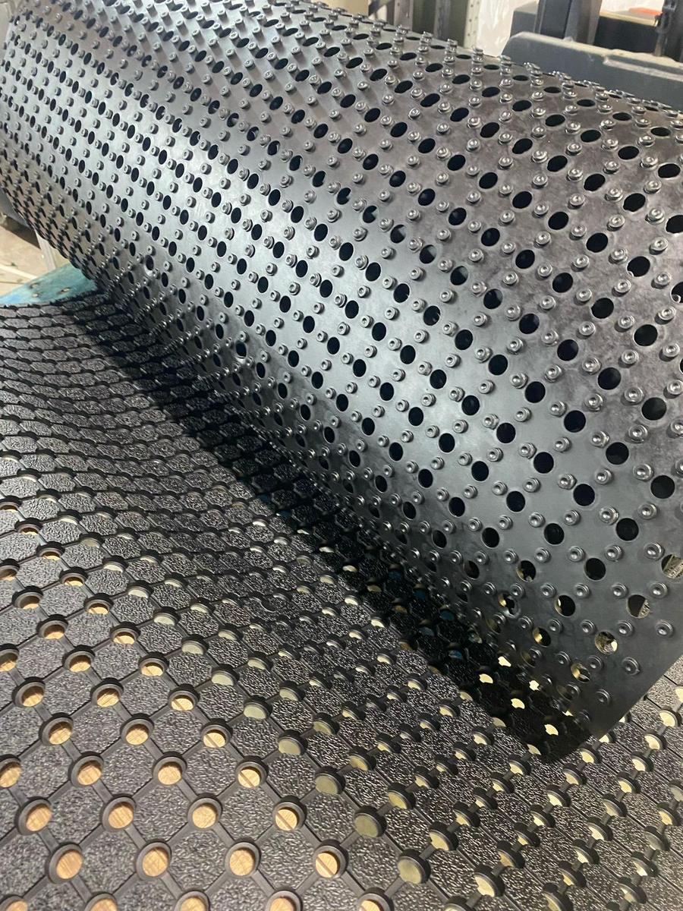
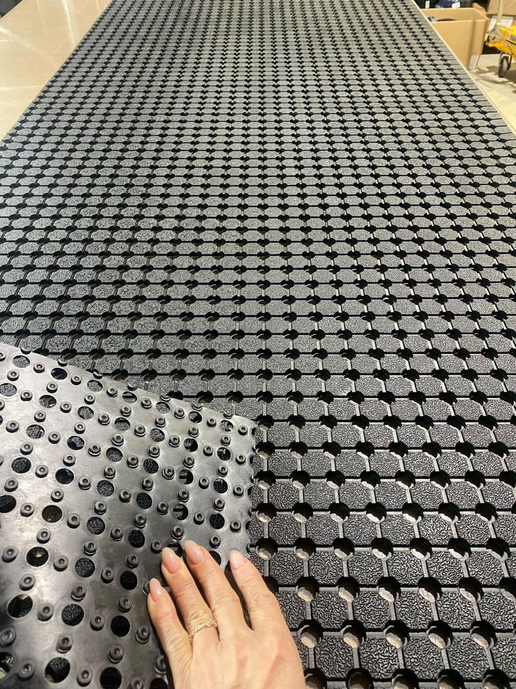
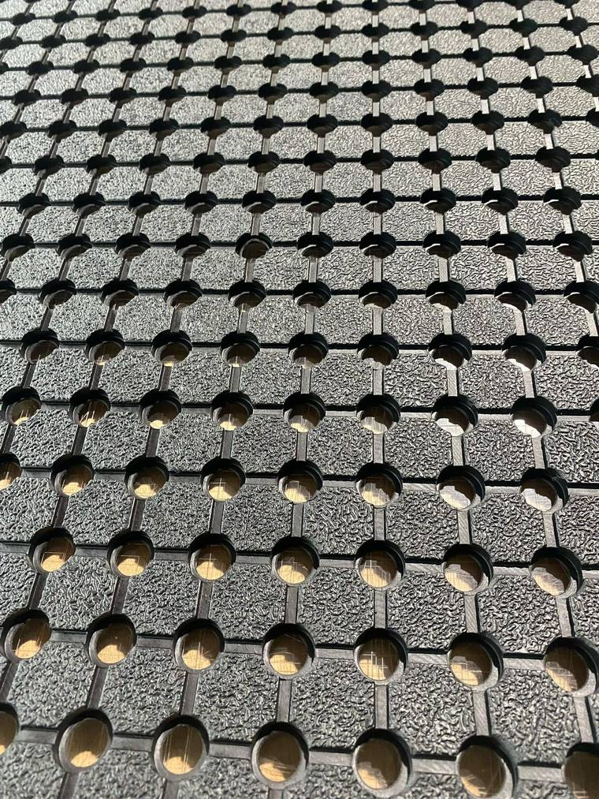

מקוואות
הרצפה סביב הבור ובחדרי ההכנה רטובה כל שעות הפעילות. המשטח מרחיק את שכבת המים מפני הדריכה, ומתרומם בסוף היום לשטיפת הרצפה עצמה.
משטח גומי מחורר שמרים את הדריכה מעל המים. המים יורדים דרך החורים ומתנקזים מתחת למשטח, במקום להיאגר בדיוק במקום שבו אנשים הולכים יחפים.

הרצפה סביב הבור ובחדרי ההכנה רטובה כל שעות הפעילות. המשטח מרחיק את שכבת המים מפני הדריכה, ומתרומם בסוף היום לשטיפת הרצפה עצמה.
המעבר בין הבריכה למלתחה הוא הקטע הרטוב ביותר, ולרוב גם היחיד שאין עליו כלום. פריסה על השביל נותנת אחיזה בדיוק שם.
אזור שבו הולכים יחפים על אריח חלק. החירור מוריד את המים אל הניקוז ברצפה, והמרקם המחוספס עובד גם כשהרגל רטובה.
מעברים שנרטבים משטיפה, מגשם או מתנועה של אנשים רטובים — ונשארים חלקים עד שהם מתייבשים.
ביום גשום כל הכניסה נהיית רטובה. המשטח קולט את המים מהנעליים ומחזיק אותם מתחת לגובה הדריכה.
עמדות שטיפה ואזורי הכנה שרטובים לאורך כל המשמרת, ושבהם עומדים על הרגליים שעות.


המשטח מסייע בהפחתת סיכון החלקה — הוא מרחיק את המים מפני הדריכה ומוסיף אחיזה. הוא אינו תחליף לשילוט, לניקוי שוטף ולנהלי הבטיחות הנהוגים במקום.
המים יורדים דרך המשטח ומתנקזים מתחתיו. מתאים לרצפה עם ניקוז, למקומות שהולכים בהם יחפים, ולשטחים שצריך להרים ולשטוף לעיתים קרובות. גליל 10 מ׳ × 91 ס״מ.
המים נעים בתעלות לאורך המשטח. גליל רחב יותר — 15 מ׳ × 1.2 מ׳ — למסדרונות ארוכים ולשטחים גדולים ברצף. לעמוד שטיח הזיגזג ←
לא בטוחים מה נכון לשטח שלכם? כתבנו על זה בהרחבה: מדריך בחירה לבריכות ולאזורים רטובים · מלתחות ומקלחות · חדרי כושר וספא.
החירור עובר דרך כל עובי הגומי, והפטמות בצד התחתון מרימות את המשטח מהרצפה. המים יורדים דרך החורים וזורמים מתחת למשטח אל הניקוז שברצפה, במקום להיאגר על פני הדריכה.
כן. הגליל מגיע באורך 10 מטר וברוחב 91 ס״מ, ונחתך בשטח לפי המידות בפועל — כולל חיתוך סביב פינות, עמודים ופתחי ניקוז.
מרימים, שוטפים את המשטח ואת הרצפה שמתחתיו, ומחזירים למקום. זה ההבדל המרכזי מריצוף קבוע — אפשר להגיע לרצפה עצמה.
9.1 מ״ר — 10 מטר אורך ברוחב 91 ס״מ. לשטחים גדולים יותר מרכיבים כמה גלילים זה לצד זה.
הוא מסייע בהפחתת סיכון החלקה: מרחיק את שכבת המים מפני הדריכה ומספק מרקם אחיזה מחוספס. הוא אינו תחליף לשילוט, לניקוי שוטף ולנהלי הבטיחות במקום.
שתי האפשרויות קיימות. אפשר לקבל את הגליל בלבד, ואפשר לכלול מדידה בשטח, פריסה, חיתוך והתאמה במקום ופינוי הפסולת.
מדובר בגומי, לא בטקסטיל — הוא לא סופג מים ולא מתעפש. אורך החיים תלוי בעומס התנועה ובתדירות השטיפה של המקום.
כמה גלילים, כמה עבודה, ומתי זה מותקן. בלי פער בין ההצעה לחשבונית.